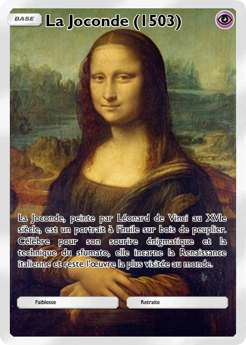
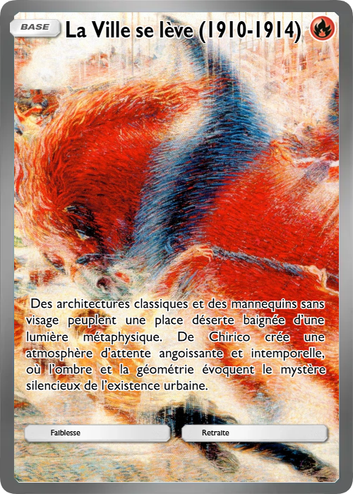
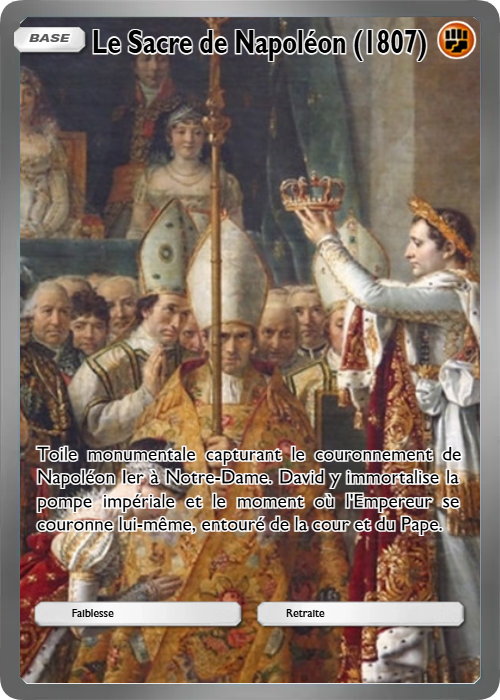
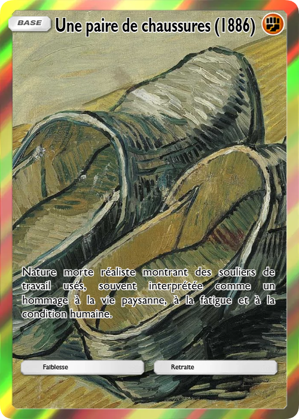

✦ Collection exclusive à chaque musée✦
Les joueurs constituent leur galerie virtuelle en acquérant des cartes illustrées
avec une fidélité exceptionnelle, détaillant l'œuvre, l'artiste et son contexte historique.
Au-delà de la collection, le jeu propose des duels où les cartes s'affrontent selon leur influence,
leur technique ou leur rareté.
L'objectif est de compléter les séries spécifiques à chaque institution
pour devenir le conservateur le plus prestigieux.
Alliant culture et stratégie,
Histor'iart offre une exploration ludique et éducative de l'histoire de l'art,
idéale pour les passionnés comme pour les curieux souhaitant voyager à travers les plus beaux musées du monde.

Apprenez en collectionnant :
chaque carte raconte une histoire, avec des anecdotes,
des dates clés et des explications accessibles à tous

Collectionnez et échangez :
bâtissez votre galerie personnelle, complétez vos séries
et partagez votre passion avec d'autres amateurs d'art.

Voyagez dans le temps et l'espace :
laissez-vous guider par les grands maîtres
et explorez la richesse culturelle qui a façonné notre monde.
Les musées
{kind=link}
{kind=link}
{kind=link}
Les raretés

Communes 🟢
Cartes communes qui présentent des œuvres majeures.
Faciles à obtenir, elles constituent la base de votre collection.

Rares 🔵
Cartes un peu plus difficiles à trouver,
mettant en avant des œuvres emblématiques ou des artistes incontournables,
avec des détails et anecdotes supplémentaires.

Maître 🟣
Cartes rares, souvent en édition limitée,
qui révèlent des chefs-d'œuvre universels ou
des pièces moins connues mais essentielles dans l'histoire de l'art.

Légendaires ✨
Cartes ultra-rares, véritables trésors de collection.
Elles célèbrent des œuvres qui ont marqué durablement l'imaginaire collectif.